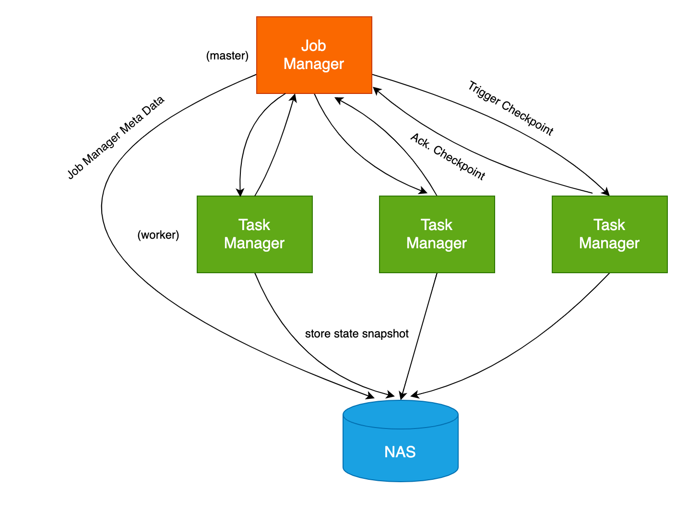

将 Flink 应用部署到 k8s 上时，为了实现任务高可用，我们就需要将 checkpoint、savepoint 以及 Job Manager meta data 等数据持久化存储下来，而不是简单地存储在单个 Node 上，这时就需要配置 Pod 的持久化存储。
在传统的 Yarn 部署模式中，我们通常会将 checkpoint 等数据存储在 HDFS 中，HDFS 是 Hadoop 分布式的文件系统。这样只要 HDFS 不出问题，就能保证 Flink 任务出现异常后，checkpoint 数据还在，Flink 任务依旧可以通过 HDFS 中的 checkpoint 进行恢复。
在 k8s 中，我们也可以参考使用 HDFS 来持久化存储数据，但相比在 k8s 上部署一个 HDFS，我们还有更好、更简单的方案：直接使用云上的弹性分布式文件系统，比如阿里云的 NAS、AWS 的 EFS。这些文件系统可以直接通过 NFS 协议协议挂载到 Pod 中，使用起来像读写本地文件一样方便。

flink-conf.yaml 配置 🔗
首先让我们来看一下，要实现 flink 任务的高可用，需要在 flink-conf.yaml 中指定的一些配置：
state.backend: rocksdb
state.checkpoint-storage: filesystem
state.checkpoints.dir: file:///nas/flink/checkpoints
state.savepoints.dir: file:///nas/flink/savepoints
state.backend.incremental: true
kubernetes.cluster-id: flink-cluster-001
high-availability: org.apache.flink.kubernetes.highavailability.KubernetesHaServicesFactory
high-availability.storageDir: file:///nas/flink/recovery
状态后端使用 rocksdb （RocksDBStateBackend）。RocksDBStateBackend 会将正在运行的数据保存在 RocksDB 数据库中。在进行 checkpoint 时，整个 RocksDB 数据库就会被保存到 state.checkpoints.dir 目录中。同时 Job Manager 也会将高可用数据存储到 state.checkpoints.dir 中。
kubernetes.cluster-id 、high-availability 和 high-availability.storageDir 则是 k8s 的高可用配置。
kubernetes.cluster-id是自定义的 Flink 任务集群名称，用来标记当前的 flink 任务；high-availability是高可用的类型，由于是部署在 k8s 上，所以需要配置为KubernetesHaServicesFactory；high-availability.storageDirJobManager 元数据的存储位置，用于存储恢复 JobManager 所需的全部元数据。
在 k8s 中，要实现任务出现异常后能自动恢复，state.checkpoints.dir 、 state.savepoints.dir 和 high-availability.storageDir 这几个目录就非常重要了，就必须持久化存储。
所以我们需要在 Pod 中将这些目录挂载到 NAS 上。
前面我们也提到了，NAS 可以通过 NFS 协议进行挂载，所以在 flink-conf.yaml 可以直接通过 file:// 前缀来指定 NAS 目录位置，跟使用本地文件一样。如果你使用过 HDFS 来存储 checkpoint 数据，则你应该还有印象，HDFS 的目录前缀是 hdfs://。
创建 PV / PVC 🔗
在 Pod 中挂载 NAS 的前提就是先创建 PV、PVC。
以下面的 yaml 为例，创建一个名为 pv-flink 的通用型 NAS 持久化存储卷，和名为 pvc-flink 的存储声明。
apiVersion: v1
kind: PersistentVolume
metadata:
name: pv-flink
labels:
alicloud-pvname: pv-flink
spec:
capacity:
storage: 5Gi
accessModes:
- ReadWriteMany
csi:
driver: nasplugin.csi.alibabacloud.com
volumeHandle: pv-dflink
volumeAttributes:
server: "xxx.cn-hangzhou.nas.aliyuncs.com"
path: "/nas/flink"
mountOptions:
- nolock,tcp,noresvport
- vers=3
---
kind: PersistentVolumeClaim
apiVersion: v1
metadata:
name: pvc-flink
spec:
accessModes:
- ReadWriteMany
resources:
requests:
storage: 5Gi
selector:
matchLabels:
alicloud-pvname: pv-flink
在 pvc-flink 中，对应的 NAS 挂载点是 xxx.cn-hangzhou.nas.aliyuncs.com，挂载的子目录是 /nas/flink。
这里需要注意的是，NAS 有通用型和极速型两个型号，极速型的 NAS volumeAttributes.path需要以 /share 为父目录。
其他字段详细的含义可以参考 NAS 文档：使用NAS静态存储卷 ，这里就不细讲了。
在 Pod 中挂载 NAS 🔗
下面是一个挂载 NAS 的 Job Manager 的 YAML 示例：
apiVersion: batch/v1
kind: Job
metadata:
name: flink-jobmanager
spec:
parallelism:
template:
metadata:
labels:
component: jobmanager
spec:
restartPolicy: OnFailure
containers:
- name: jobmanager
imagePullPolicy: Always
image: my-flink-job:latest
resources:
limits:
cpu: 1
memory: 4Gi
requests:
cpu: 1
memory: 4Gi
env:
- name: POD_IP
valueFrom:
fieldRef:
apiVersion: v1
fieldPath: status.podIP
args: [ "standalone-job"]
ports:
- containerPort: 6123
name: rpc
- containerPort: 6124
name: blob-server
- containerPort: 8081
name: webui
livenessProbe:
tcpSocket:
port: 6123
initialDelaySeconds: 30
periodSeconds: 60
volumeMounts:
- name: volume-pvc-nas-flink
mountPath: /nas/flink
securityContext:
runAsUser: 9999
serviceAccountName: flink
volumes:
- name: volume-pvc-nas-flink
persistentVolumeClaim:
claimName: pvc-flink
我们使用 volumeMounts 将 /nas/flink 目录挂载到 volume-pvc-nas-flink 卷，该卷对应的是 NAS 持久化存储卷。
在该 Pod 中，镜像是基于 Flink 官方 Docker 镜像 的 my-flink-job:latest 。
Flink 官方的 Docker 镜像中创建了 flink 用户组以及组内的 flink 用户，用户组和用户的 ID 均为 9999。 并且在官方镜像中，最终也是使用 flink 用户来启动 Job Manager 和 Task Manager。
下面是 Flink 官方镜像 Dockerfile 的相关脚本：
......
ENV FLINK_HOME=/opt/flink
ENV PATH=$FLINK_HOME/bin:$PATH
RUN groupadd --system --gid=9999 flink && \
useradd --system --home-dir $FLINK_HOME --uid=9999 --gid=flink flink
WORKDIR $FLINK_HOME
......
所以在 securityContext 中，我们也指定 runAsUser 为 9999 ，使 Pod 中的所有进程都是用 9999 （也就是 flink 用户）来运行。
挂载了 NAS 之后，还有一件非常重要的事情，就是初始化 NAS 目录的权限。
因为 NAS 目录默认是使用 root 用户挂载的，但 flink 任务是以 ID 为 9999 的用户执行的，所以这时 flink 任务没有权限写 NAS 目录。
解决这个问题的方案有两种，一是使用 root 权限运行 flink 任务；二是修改所挂载的 NAS 目录的权限。通常为了安全起见，我们不会使用 root 权限运行 Pod，所以选择方案二。
初始化 NAS 目录权限 🔗
要初始化 NAS 目录的权限， 我们可以使用 k8s 的 Init 容器。Init 容器是一个特殊的容器，可以在 Pod 内的应用容器启动前运行。所以我们可以基于 Init 容器做一些初始化工作，比如执行初始化脚本、设置目录权限等。
要初始化 NAS 目录权限，就需要在 Init 容器中也挂载对应的 NAS 目录，以便 Init 容器能够访问该目录。然后通过 command 来执行 shell 命令，修改目录权限。
将 /nas/flink 目录的所有者设置为 flink 用户的命令为：
$ chown -R 9999:9999 /nas/flink
在 Init 容器中， 我们使用了 alpine 镜像， 这是一个基于 Alpine Linux 的只有 5MB 的 Docker 镜像。
完成的 YAML 文件如下所示：
apiVersion: batch/v1
kind: Job
metadata:
name: flink-jobmanager
spec:
parallelism:
template:
metadata:
labels:
component: jobmanager
spec:
restartPolicy: OnFailure
initContainers:
- name: init-jobmanager
image: alpine:3
command:
- chown
- -R
- 9999:9999
- /nas/flink
volumeMounts:
- name: volume-pvc-nas-flink
mountPath: /nas/flink
containers:
- name: jobmanager
imagePullPolicy: Always
image: my-flink-job:latest
resources:
limits:
cpu: 1
memory: 4Gi
requests:
cpu: 1
memory: 4Gi
env:
- name: POD_IP
valueFrom:
fieldRef:
apiVersion: v1
fieldPath: status.podIP
args: [ "standalone-job"]
ports:
- containerPort: 6123
name: rpc
- containerPort: 6124
name: blob-server
- containerPort: 8081
name: webui
livenessProbe:
tcpSocket:
port: 6123
initialDelaySeconds: 30
periodSeconds: 60
volumeMounts:
- name: volume-pvc-nas-flink
mountPath: /nas/flink
securityContext:
runAsUser: 9999
serviceAccountName: flink
volumes:
- name: volume-pvc-nas-flink
persistentVolumeClaim:
claimName: pvc-flink
这样 k8s 在运行 jobmanager 容器前，会先运行 init-jobmanager 容器，init-jobmanager 会将 /nas/flink 目录的所有者修改为 ID 为 9999 的用户，即 flink。init-jobmanager 运行完毕后，再运行 jobmanager ，这时 jobmanager 中的 flink 任务就有权限读写 /nas/flink 目录了。
这里需要注意的是，Job Manager 和 Task Manager 的 NAS 挂载路径 mountPath 必须保持一致。
Checkpoint 文件的清理 🔗
配置了持久化存储后，Flink 会将 state 数据持久存储在 state.checkpoints.dir目录。
state.checkpoints.dir 目录结构如下：
/user-defined-checkpoint-dir
/{job-id}
|
+ --shared/
+ --taskowned/
+ --chk-1/
+ --chk-2/
+ --chk-3/
...
其中 shared目录中保持的是可能被多个 checkpoint 引用的文件，taskowned 目录保存的是不会被 Job Manager 删除的文件，chk-{n} 则是每个 checkpoint 的文件，n 为 checkpoint 的 ID。
checkpoint 文件的数量可以在 flink-config.yaml 中通过 state.checkpoints.num-retained 参数指定。默认为 1，即只保留一个 checkpoint 文件，Flink 会清理多余的 checkpoint 文件。
前面提到在 k8s 中 Job Manager 和 Task Manager 的持久化存储路径 mountPath 必须保持一致。如果不一致，则 Job Manager 和 Task Manager 的 checkpoint 文件就会存储到不同的目录中。这时即使设置了 state.checkpoints.num-retained， Flink 也无法自动清理多余的 checkpoint 文件，最终会导致 checkpoint 文件堆积、占满磁盘空间。
常见问题 🔗
目录权限错误 🔗
在进行持久化存储配置的时候，最常见的问题就是没有初始化 NAS 目录的权限，导致应用无法启动。
通常 Job Manager 的报错可能如下所示：
2021-08-02 17:51:23.718 ERROR org.apache.flink.runtime.entrypoint.ClusterEntrypoint [] - Fatal error occurred in the cluster entrypoint.
org.apache.flink.util.FlinkException: Application failed unexpectedly.
at org.apache.flink.client.deployment.application.ApplicationDispatcherBootstrap.lambda$runApplicationAndShutdownClusterAsync$0(ApplicationDispatcherBootstrap.java:170) ~[flink-dist_2.12-1.13.1.jar:1.13.1]
at java.util.concurrent.CompletableFuture.uniHandle(CompletableFuture.java:836) ~[?:1.8.0_292]
at java.util.concurrent.CompletableFuture$UniHandle.tryFire(CompletableFuture.java:811) ~[?:1.8.0_292]
at java.util.concurrent.CompletableFuture.postComplete(CompletableFuture.java:488) ~[?:1.8.0_292]
at java.util.concurrent.CompletableFuture.completeExceptionally(CompletableFuture.java:1990) ~[?:1.8.0_292]
at org.apache.flink.client.deployment.application.ApplicationDispatcherBootstrap.runApplicationEntryPoint(ApplicationDispatcherBootstrap.java:257) ~[flink-dist_2.12-1.13.1.jar:1.13.1]
at org.apache.flink.client.deployment.application.ApplicationDispatcherBootstrap.lambda$runApplicationAsync$1(ApplicationDispatcherBootstrap.java:212) ~[flink-dist_2.12-1.13.1.jar:1.13.1]
at java.util.concurrent.Executors$RunnableAdapter.call(Executors.java:511) [?:1.8.0_292]
at java.util.concurrent.FutureTask.run(FutureTask.java:266) [?:1.8.0_292]
at org.apache.flink.runtime.concurrent.akka.ActorSystemScheduledExecutorAdapter$ScheduledFutureTask.run(ActorSystemScheduledExecutorAdapter.java:159) [flink-dist_2.12-1.13.1.jar:1.13.1]
at akka.dispatch.TaskInvocation.run(AbstractDispatcher.scala:40) [flink-dist_2.12-1.13.1.jar:1.13.1]
at akka.dispatch.ForkJoinExecutorConfigurator$AkkaForkJoinTask.exec(ForkJoinExecutorConfigurator.scala:44) [flink-dist_2.12-1.13.1.jar:1.13.1]
at akka.dispatch.forkjoin.ForkJoinTask.doExec(ForkJoinTask.java:260) [flink-dist_2.12-1.13.1.jar:1.13.1]
at akka.dispatch.forkjoin.ForkJoinPool$WorkQueue.runTask(ForkJoinPool.java:1339) [flink-dist_2.12-1.13.1.jar:1.13.1]
at akka.dispatch.forkjoin.ForkJoinPool.runWorker(ForkJoinPool.java:1979) [flink-dist_2.12-1.13.1.jar:1.13.1]
at akka.dispatch.forkjoin.ForkJoinWorkerThread.run(ForkJoinWorkerThread.java:107) [flink-dist_2.12-1.13.1.jar:1.13.1]
Caused by: java.util.concurrent.CompletionException: org.apache.flink.client.deployment.application.ApplicationExecutionException: Could not execute application.
at java.util.concurrent.CompletableFuture.encodeThrowable(CompletableFuture.java:292) ~[?:1.8.0_292]
at java.util.concurrent.CompletableFuture.completeThrowable(CompletableFuture.java:308) ~[?:1.8.0_292]
at java.util.concurrent.CompletableFuture.uniCompose(CompletableFuture.java:957) ~[?:1.8.0_292]
at java.util.concurrent.CompletableFuture$UniCompose.tryFire(CompletableFuture.java:940) ~[?:1.8.0_292]
... 13 more
Caused by: org.apache.flink.client.deployment.application.ApplicationExecutionException: Could not execute application.
... 11 more
Caused by: org.apache.flink.client.program.ProgramInvocationException: The main method caused an error: Failed to execute job 'DeliveryOssStream'.
at org.apache.flink.client.program.PackagedProgram.callMainMethod(PackagedProgram.java:372) ~[flink-dist_2.12-1.13.1.jar:1.13.1]
at org.apache.flink.client.program.PackagedProgram.invokeInteractiveModeForExecution(PackagedProgram.java:222) ~[flink-dist_2.12-1.13.1.jar:1.13.1]
at org.apache.flink.client.ClientUtils.executeProgram(ClientUtils.java:114) ~[flink-dist_2.12-1.13.1.jar:1.13.1]
at org.apache.flink.client.deployment.application.ApplicationDispatcherBootstrap.runApplicationEntryPoint(ApplicationDispatcherBootstrap.java:242) ~[flink-dist_2.12-1.13.1.jar:1.13.1]
... 10 more
Caused by: org.apache.flink.util.FlinkException: Failed to execute job 'DeliveryOssStream'.
at org.apache.flink.streaming.api.environment.StreamExecutionEnvironment.executeAsync(StreamExecutionEnvironment.java:1970) ~[flink-dist_2.12-1.13.1.jar:1.13.1]
at org.apache.flink.client.program.StreamContextEnvironment.executeAsync(StreamContextEnvironment.java:135) ~[flink-dist_2.12-1.13.1.jar:1.13.1]
at org.apache.flink.client.program.StreamContextEnvironment.execute(StreamContextEnvironment.java:76) ~[flink-dist_2.12-1.13.1.jar:1.13.1]
at org.apache.flink.streaming.api.environment.StreamExecutionEnvironment.execute(StreamExecutionEnvironment.java:1834) ~[flink-dist_2.12-1.13.1.jar:1.13.1]
at com.aliyun.actiontrail.delivery.stream.OssStream.start(OssStream.java:59) ~[?:?]
at com.aliyun.actiontrail.delivery.Main.main(Main.java:143) ~[?:?]
at sun.reflect.NativeMethodAccessorImpl.invoke0(Native Method) ~[?:1.8.0_292]
at sun.reflect.NativeMethodAccessorImpl.invoke(NativeMethodAccessorImpl.java:62) ~[?:1.8.0_292]
at sun.reflect.DelegatingMethodAccessorImpl.invoke(DelegatingMethodAccessorImpl.java:43) ~[?:1.8.0_292]
at java.lang.reflect.Method.invoke(Method.java:498) ~[?:1.8.0_292]
at org.apache.flink.client.program.PackagedProgram.callMainMethod(PackagedProgram.java:355) ~[flink-dist_2.12-1.13.1.jar:1.13.1]
at org.apache.flink.client.program.PackagedProgram.invokeInteractiveModeForExecution(PackagedProgram.java:222) ~[flink-dist_2.12-1.13.1.jar:1.13.1]
at org.apache.flink.client.ClientUtils.executeProgram(ClientUtils.java:114) ~[flink-dist_2.12-1.13.1.jar:1.13.1]
at org.apache.flink.client.deployment.application.ApplicationDispatcherBootstrap.runApplicationEntryPoint(ApplicationDispatcherBootstrap.java:242) ~[flink-dist_2.12-1.13.1.jar:1.13.1]
... 10 more
Caused by: org.apache.flink.runtime.client.JobSubmissionException: Failed to submit job.
at org.apache.flink.runtime.dispatcher.Dispatcher.lambda$internalSubmitJob$2(Dispatcher.java:380) ~[flink-dist_2.12-1.13.1.jar:1.13.1]
at java.util.concurrent.CompletableFuture.uniHandle(CompletableFuture.java:836) ~[?:1.8.0_292]
at java.util.concurrent.CompletableFuture$UniHandle.tryFire(CompletableFuture.java:811) ~[?:1.8.0_292]
at java.util.concurrent.CompletableFuture$Completion.run(CompletableFuture.java:456) ~[?:1.8.0_292]
at java.util.concurrent.ThreadPoolExecutor.runWorker(ThreadPoolExecutor.java:1149) ~[?:1.8.0_292]
at java.util.concurrent.ThreadPoolExecutor$Worker.run(ThreadPoolExecutor.java:624) ~[?:1.8.0_292]
at java.lang.Thread.run(Thread.java:748) ~[?:1.8.0_292]
Caused by: java.lang.RuntimeException: java.lang.Exception: Could not open output stream for state backend
at org.apache.flink.util.ExceptionUtils.rethrow(ExceptionUtils.java:316) ~[flink-dist_2.12-1.13.1.jar:1.13.1]
at org.apache.flink.util.function.FunctionUtils.lambda$uncheckedConsumer$3(FunctionUtils.java:95) ~[flink-dist_2.12-1.13.1.jar:1.13.1]
at java.util.concurrent.CompletableFuture.uniAccept(CompletableFuture.java:670) ~[?:1.8.0_292]
at java.util.concurrent.CompletableFuture$UniAccept.tryFire(CompletableFuture.java:646) ~[?:1.8.0_292]
at java.util.concurrent.CompletableFuture$Completion.run(CompletableFuture.java:456) ~[?:1.8.0_292]
at org.apache.flink.runtime.rpc.akka.AkkaRpcActor.handleRunAsync(AkkaRpcActor.java:440) ~[flink-dist_2.12-1.13.1.jar:1.13.1]
at org.apache.flink.runtime.rpc.akka.AkkaRpcActor.handleRpcMessage(AkkaRpcActor.java:208) ~[flink-dist_2.12-1.13.1.jar:1.13.1]
at org.apache.flink.runtime.rpc.akka.FencedAkkaRpcActor.handleRpcMessage(FencedAkkaRpcActor.java:77) ~[flink-dist_2.12-1.13.1.jar:1.13.1]
at org.apache.flink.runtime.rpc.akka.AkkaRpcActor.handleMessage(AkkaRpcActor.java:158) ~[flink-dist_2.12-1.13.1.jar:1.13.1]
at akka.japi.pf.UnitCaseStatement.apply(CaseStatements.scala:26) ~[flink-dist_2.12-1.13.1.jar:1.13.1]
at akka.japi.pf.UnitCaseStatement.apply(CaseStatements.scala:21) ~[flink-dist_2.12-1.13.1.jar:1.13.1]
at scala.PartialFunction.applyOrElse(PartialFunction.scala:123) ~[flink-dist_2.12-1.13.1.jar:1.13.1]
at scala.PartialFunction.applyOrElse$(PartialFunction.scala:122) ~[flink-dist_2.12-1.13.1.jar:1.13.1]
at akka.japi.pf.UnitCaseStatement.applyOrElse(CaseStatements.scala:21) ~[flink-dist_2.12-1.13.1.jar:1.13.1]
at scala.PartialFunction$OrElse.applyOrElse(PartialFunction.scala:171) ~[flink-dist_2.12-1.13.1.jar:1.13.1]
at scala.PartialFunction$OrElse.applyOrElse(PartialFunction.scala:172) ~[flink-dist_2.12-1.13.1.jar:1.13.1]
at scala.PartialFunction$OrElse.applyOrElse(PartialFunction.scala:172) ~[flink-dist_2.12-1.13.1.jar:1.13.1]
at akka.actor.Actor.aroundReceive(Actor.scala:517) ~[flink-dist_2.12-1.13.1.jar:1.13.1]
at akka.actor.Actor.aroundReceive$(Actor.scala:515) ~[flink-dist_2.12-1.13.1.jar:1.13.1]
at akka.actor.AbstractActor.aroundReceive(AbstractActor.scala:225) ~[flink-dist_2.12-1.13.1.jar:1.13.1]
at akka.actor.ActorCell.receiveMessage(ActorCell.scala:592) ~[flink-dist_2.12-1.13.1.jar:1.13.1]
at akka.actor.ActorCell.invoke(ActorCell.scala:561) ~[flink-dist_2.12-1.13.1.jar:1.13.1]
at akka.dispatch.Mailbox.processMailbox(Mailbox.scala:258) ~[flink-dist_2.12-1.13.1.jar:1.13.1]
at akka.dispatch.Mailbox.run(Mailbox.scala:225) ~[flink-dist_2.12-1.13.1.jar:1.13.1]
at akka.dispatch.Mailbox.exec(Mailbox.scala:235) ~[flink-dist_2.12-1.13.1.jar:1.13.1]
... 4 more
Caused by: java.lang.Exception: Could not open output stream for state backend
at org.apache.flink.runtime.persistence.filesystem.FileSystemStateStorageHelper.store(FileSystemStateStorageHelper.java:72) ~[flink-dist_2.12-1.13.1.jar:1.13.1]
at org.apache.flink.kubernetes.highavailability.KubernetesStateHandleStore.addAndLock(KubernetesStateHandleStore.java:131) ~[flink-dist_2.12-1.13.1.jar:1.13.1]
at org.apache.flink.runtime.jobmanager.DefaultJobGraphStore.putJobGraph(DefaultJobGraphStore.java:212) ~[flink-dist_2.12-1.13.1.jar:1.13.1]
at org.apache.flink.runtime.dispatcher.Dispatcher.persistAndRunJob(Dispatcher.java:391) ~[flink-dist_2.12-1.13.1.jar:1.13.1]
at org.apache.flink.runtime.dispatcher.Dispatcher.lambda$waitForTerminatingJob$27(Dispatcher.java:954) ~[flink-dist_2.12-1.13.1.jar:1.13.1]
at org.apache.flink.util.function.FunctionUtils.lambda$uncheckedConsumer$3(FunctionUtils.java:93) ~[flink-dist_2.12-1.13.1.jar:1.13.1]
at java.util.concurrent.CompletableFuture.uniAccept(CompletableFuture.java:670) ~[?:1.8.0_292]
at java.util.concurrent.CompletableFuture$UniAccept.tryFire(CompletableFuture.java:646) ~[?:1.8.0_292]
at java.util.concurrent.CompletableFuture$Completion.run(CompletableFuture.java:456) ~[?:1.8.0_292]
at org.apache.flink.runtime.rpc.akka.AkkaRpcActor.handleRunAsync(AkkaRpcActor.java:440) ~[flink-dist_2.12-1.13.1.jar:1.13.1]
at org.apache.flink.runtime.rpc.akka.AkkaRpcActor.handleRpcMessage(AkkaRpcActor.java:208) ~[flink-dist_2.12-1.13.1.jar:1.13.1]
at org.apache.flink.runtime.rpc.akka.FencedAkkaRpcActor.handleRpcMessage(FencedAkkaRpcActor.java:77) ~[flink-dist_2.12-1.13.1.jar:1.13.1]
at org.apache.flink.runtime.rpc.akka.AkkaRpcActor.handleMessage(AkkaRpcActor.java:158) ~[flink-dist_2.12-1.13.1.jar:1.13.1]
at akka.japi.pf.UnitCaseStatement.apply(CaseStatements.scala:26) ~[flink-dist_2.12-1.13.1.jar:1.13.1]
at akka.japi.pf.UnitCaseStatement.apply(CaseStatements.scala:21) ~[flink-dist_2.12-1.13.1.jar:1.13.1]
at scala.PartialFunction.applyOrElse(PartialFunction.scala:123) ~[flink-dist_2.12-1.13.1.jar:1.13.1]
at scala.PartialFunction.applyOrElse$(PartialFunction.scala:122) ~[flink-dist_2.12-1.13.1.jar:1.13.1]
at akka.japi.pf.UnitCaseStatement.applyOrElse(CaseStatements.scala:21) ~[flink-dist_2.12-1.13.1.jar:1.13.1]
at scala.PartialFunction$OrElse.applyOrElse(PartialFunction.scala:171) ~[flink-dist_2.12-1.13.1.jar:1.13.1]
at scala.PartialFunction$OrElse.applyOrElse(PartialFunction.scala:172) ~[flink-dist_2.12-1.13.1.jar:1.13.1]
at scala.PartialFunction$OrElse.applyOrElse(PartialFunction.scala:172) ~[flink-dist_2.12-1.13.1.jar:1.13.1]
at akka.actor.Actor.aroundReceive(Actor.scala:517) ~[flink-dist_2.12-1.13.1.jar:1.13.1]
at akka.actor.Actor.aroundReceive$(Actor.scala:515) ~[flink-dist_2.12-1.13.1.jar:1.13.1]
at akka.actor.AbstractActor.aroundReceive(AbstractActor.scala:225) ~[flink-dist_2.12-1.13.1.jar:1.13.1]
at akka.actor.ActorCell.receiveMessage(ActorCell.scala:592) ~[flink-dist_2.12-1.13.1.jar:1.13.1]
at akka.actor.ActorCell.invoke(ActorCell.scala:561) ~[flink-dist_2.12-1.13.1.jar:1.13.1]
at akka.dispatch.Mailbox.processMailbox(Mailbox.scala:258) ~[flink-dist_2.12-1.13.1.jar:1.13.1]
at akka.dispatch.Mailbox.run(Mailbox.scala:225) ~[flink-dist_2.12-1.13.1.jar:1.13.1]
at akka.dispatch.Mailbox.exec(Mailbox.scala:235) ~[flink-dist_2.12-1.13.1.jar:1.13.1]
... 4 more
Caused by: java.io.IOException: Mkdirs failed to create file:/nas/flink/recovery/default
at org.apache.flink.core.fs.local.LocalFileSystem.create(LocalFileSystem.java:262) ~[flink-dist_2.12-1.13.1.jar:1.13.1]
at org.apache.flink.runtime.persistence.filesystem.FileSystemStateStorageHelper.store(FileSystemStateStorageHelper.java:64) ~[flink-dist_2.12-1.13.1.jar:1.13.1]
at org.apache.flink.kubernetes.highavailability.KubernetesStateHandleStore.addAndLock(KubernetesStateHandleStore.java:131) ~[flink-dist_2.12-1.13.1.jar:1.13.1]
at org.apache.flink.runtime.jobmanager.DefaultJobGraphStore.putJobGraph(DefaultJobGraphStore.java:212) ~[flink-dist_2.12-1.13.1.jar:1.13.1]
at org.apache.flink.runtime.dispatcher.Dispatcher.persistAndRunJob(Dispatcher.java:391) ~[flink-dist_2.12-1.13.1.jar:1.13.1]
at org.apache.flink.runtime.dispatcher.Dispatcher.lambda$waitForTerminatingJob$27(Dispatcher.java:954) ~[flink-dist_2.12-1.13.1.jar:1.13.1]
at org.apache.flink.util.function.FunctionUtils.lambda$uncheckedConsumer$3(FunctionUtils.java:93) ~[flink-dist_2.12-1.13.1.jar:1.13.1]
at java.util.concurrent.CompletableFuture.uniAccept(CompletableFuture.java:670) ~[?:1.8.0_292]
at java.util.concurrent.CompletableFuture$UniAccept.tryFire(CompletableFuture.java:646) ~[?:1.8.0_292]
at java.util.concurrent.CompletableFuture$Completion.run(CompletableFuture.java:456) ~[?:1.8.0_292]
at org.apache.flink.runtime.rpc.akka.AkkaRpcActor.handleRunAsync(AkkaRpcActor.java:440) ~[flink-dist_2.12-1.13.1.jar:1.13.1]
at org.apache.flink.runtime.rpc.akka.AkkaRpcActor.handleRpcMessage(AkkaRpcActor.java:208) ~[flink-dist_2.12-1.13.1.jar:1.13.1]
at org.apache.flink.runtime.rpc.akka.FencedAkkaRpcActor.handleRpcMessage(FencedAkkaRpcActor.java:77) ~[flink-dist_2.12-1.13.1.jar:1.13.1]
at org.apache.flink.runtime.rpc.akka.AkkaRpcActor.handleMessage(AkkaRpcActor.java:158) ~[flink-dist_2.12-1.13.1.jar:1.13.1]
at akka.japi.pf.UnitCaseStatement.apply(CaseStatements.scala:26) ~[flink-dist_2.12-1.13.1.jar:1.13.1]
at akka.japi.pf.UnitCaseStatement.apply(CaseStatements.scala:21) ~[flink-dist_2.12-1.13.1.jar:1.13.1]
at scala.PartialFunction.applyOrElse(PartialFunction.scala:123) ~[flink-dist_2.12-1.13.1.jar:1.13.1]
at scala.PartialFunction.applyOrElse$(PartialFunction.scala:122) ~[flink-dist_2.12-1.13.1.jar:1.13.1]
at akka.japi.pf.UnitCaseStatement.applyOrElse(CaseStatements.scala:21) ~[flink-dist_2.12-1.13.1.jar:1.13.1]
at scala.PartialFunction$OrElse.applyOrElse(PartialFunction.scala:171) ~[flink-dist_2.12-1.13.1.jar:1.13.1]
at scala.PartialFunction$OrElse.applyOrElse(PartialFunction.scala:172) ~[flink-dist_2.12-1.13.1.jar:1.13.1]
at scala.PartialFunction$OrElse.applyOrElse(PartialFunction.scala:172) ~[flink-dist_2.12-1.13.1.jar:1.13.1]
at akka.actor.Actor.aroundReceive(Actor.scala:517) ~[flink-dist_2.12-1.13.1.jar:1.13.1]
at akka.actor.Actor.aroundReceive$(Actor.scala:515) ~[flink-dist_2.12-1.13.1.jar:1.13.1]
at akka.actor.AbstractActor.aroundReceive(AbstractActor.scala:225) ~[flink-dist_2.12-1.13.1.jar:1.13.1]
at akka.actor.ActorCell.receiveMessage(ActorCell.scala:592) ~[flink-dist_2.12-1.13.1.jar:1.13.1]
at akka.actor.ActorCell.invoke(ActorCell.scala:561) ~[flink-dist_2.12-1.13.1.jar:1.13.1]
at akka.dispatch.Mailbox.processMailbox(Mailbox.scala:258) ~[flink-dist_2.12-1.13.1.jar:1.13.1]
at akka.dispatch.Mailbox.run(Mailbox.scala:225) ~[flink-dist_2.12-1.13.1.jar:1.13.1]
at akka.dispatch.Mailbox.exec(Mailbox.scala:235) ~[flink-dist_2.12-1.13.1.jar:1.13.1]
... 4 more
2021-08-02 17:51:23.721 INFO org.apache.flink.runtime.entrypoint.ClusterEntrypoint [] - Shutting StandaloneApplicationClusterEntryPoint down with application status UNKNOWN. Diagnostics Cluster entrypoint has been closed externally..
报错信息很多，但一开始可能很难知道原因。其中造成 Job Manager 无法启动的主要报错是：
Caused by: java.io.IOException: Mkdirs failed to create file:/nas/flink/recovery/default
其根本原因是 flink 任务进程没有权限写 file:/nas/flink/recovery/default 目录。
然后 Job Manager 会不断重启，Task Manager 虽然不会重启，但也无法正常工作。
这时登录到 Job Manager 或 Task Manager 的任意一个 Pod 上，查看任务启动进程，就可以发现 flink 任务进程是通过 flink 用户启动的，但 /nas/flink 目录的所有者是 root ，所以 flink 任务进程没有权限写 /nas/flink 目录。
# 查看当前 flink 任务的启动用户
$ ps -aux
USER PID %CPU %MEM VSZ RSS TTY STAT START TIME COMMAND
flink 1 7.7 2.5 7449300 1655960 ? Ssl 17:54 0:05 /usr/local/openjdk-8/bin/java -Xmx4563402682 -Xms4563402682 -XX:MaxDirectMem
root 280 0.0 0.0 5752 3608 pts/0 Ss 17:55 0:00 bash
root 331 0.0 0.0 9392 2972 pts/0 R+ 17:56 0:00 ps -aux
# 查看 /nas/flink 目录的权限
$ ls -l /nas
total 77
...
drwxr-xr-x 2 root root 4096 Aug 2 17:48 flink
此外我们还可以通过 cat /etc/passwd 查看 flink 用户对应的 ID，即 9999，这也跟前面提到的 Docker 镜像中 flink 用户的 PID 为 9999 相对应。
$ cat /etc/passwd
root:x:0:0:root:/root:/bin/bash
daemon:x:1:1:daemon:/usr/sbin:/usr/sbin/nologin
bin:x:2:2:bin:/bin:/usr/sbin/nologin
sys:x:3:3:sys:/dev:/usr/sbin/nologin
sync:x:4:65534:sync:/bin:/bin/sync
......
flink:x:9999:9999::/opt/flink:/bin/sh
当然，解决该问题的方法，前面也讲了，就是通过 Init 容器初始化 NAS 目录的权限。
checkpoint 文件堆积占满磁盘空间 🔗
另一个常见问题是，checkpoint 文件堆积，导致磁盘空间占满。
这时有两种情况，一是 state.checkpoints.num-retained 过大，不过通常可能不是这个原因。更可能的原因是 Job Manager 和 Task Manager 的持久化存储卷挂载路径 mountPath 不一致，这时就需要检查对应的 YAML 配置。
总结 🔗
在 Flink on k8s 中，我们通常会使用 NAS 等持久化存储来保存 checkpoint、savepoint 以及高可用数据。
但在使用持久化存储时，最常见的一个问题就是 flink 任务没有权限读写持久化存储，所以我们需要通过 Init 容器来初始化持久化存储的目录权限。